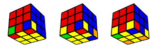
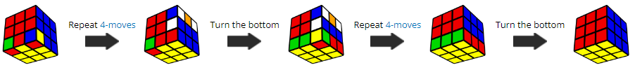

Orient Corners

It is very easy to make a mistake during this step, so I recommend reading the whole thing, including the common mistakes, before attempting it.
Turn the cube over so that the unsolved corners are all in the bottom layer.
You may have 2, 3, or 4 unsolved corner pieces.

Repeatedly do the 4-move sequence until the front/right corner is solved (has yellow on the bottom).
Then turn the bottom layer (not the whole cube) to bring an unsolved corner to the front/right. Repeat until the whole cube is solved.

Common mistakes:
- Turning the whole cube to get the next corner to the bottom/right. Make sure you turn only the bottom layer.
- Not finishing the 4-moves because the corner is solved after 3 moves. Make sure you always finish the 4-moves.
Note: If you only have 1 corner unsolved while the rest of the cube is solved, or if you followed step 7 correctly but it does not work, then your cube is unsolvable, and needs to be taken apart and reassembled.